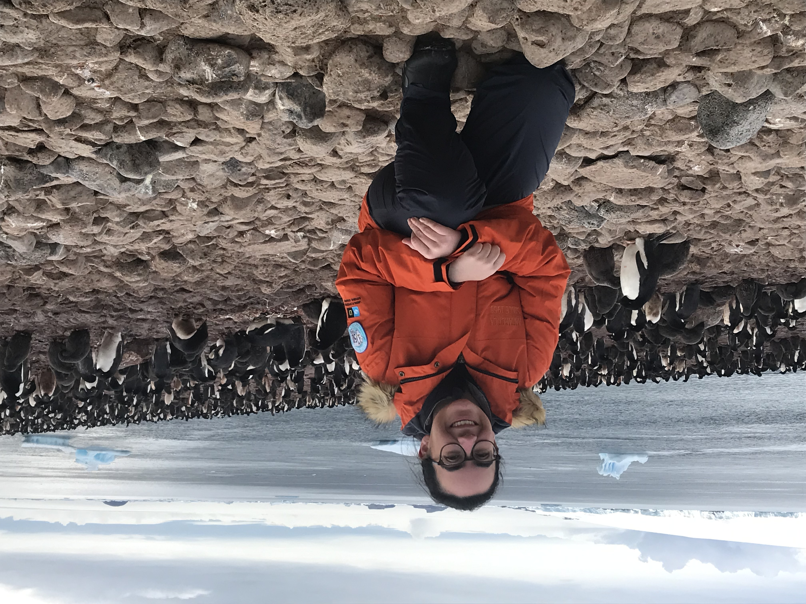
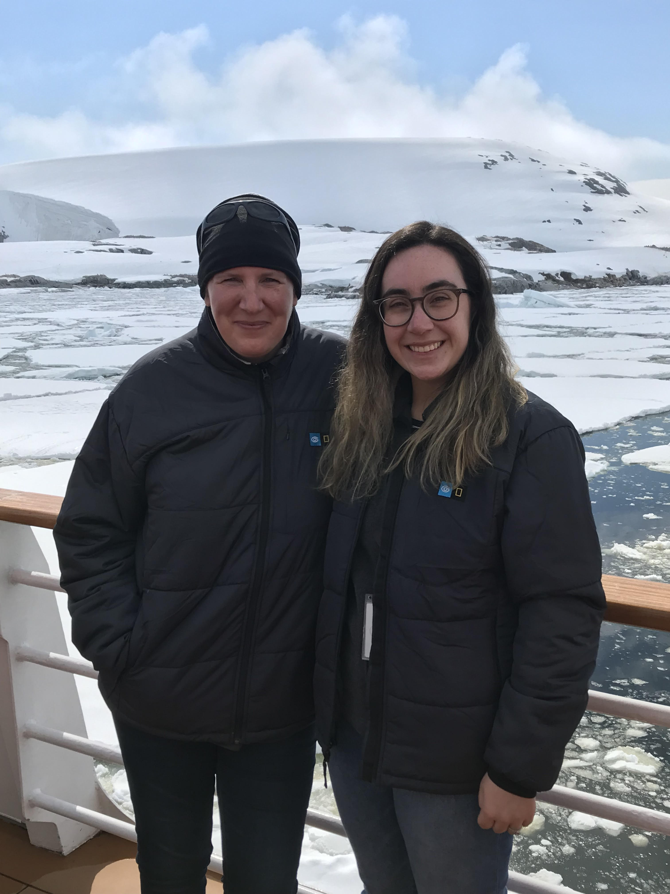
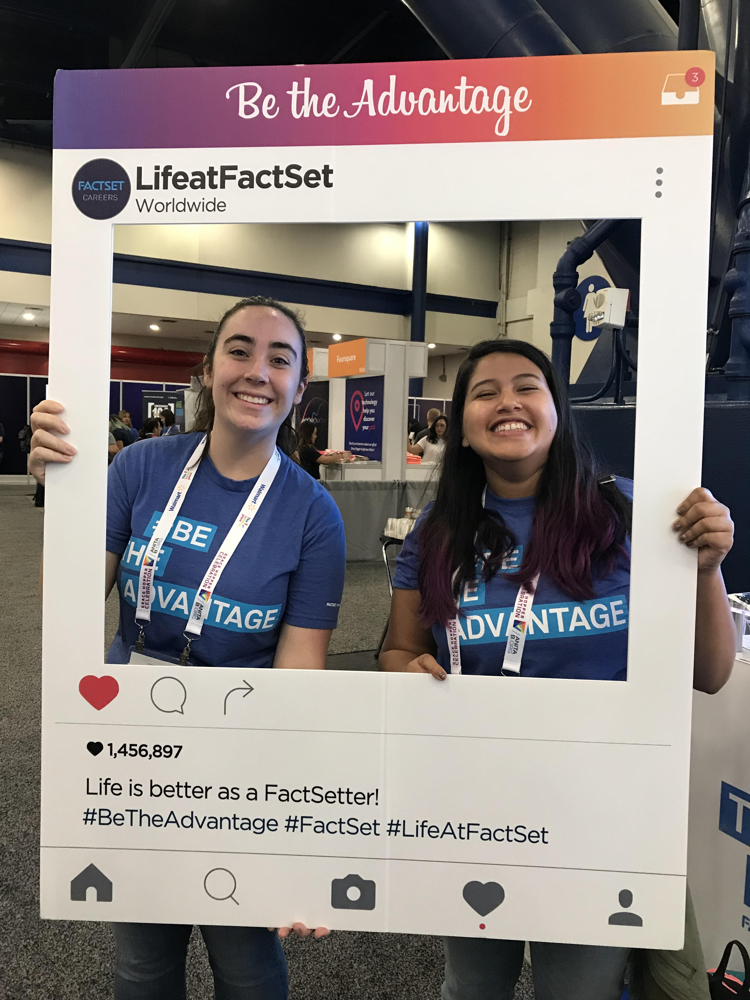

Adeile penguin colony on Paulet Island in Antarctica
I'm a second year PhD student at the University of California, Berkeley. I graduated from the University of Rochester in 2016 with a B.S. in Computer Science, B.A. in Linguistics, and minor in Spanish. After graduating, I worked at FactSet Research Systems in Norwalk, CT as a Software Engineer, where I programmed mainly in JavaScript and Python. I returned to Linguistics in 2022 and completed a Masters in Language Documentation at the University of Rochester.
Language Documentation and Description, Sociolinguistic Variation, Areal Linguistics, Language Contact, Language Revitalization, Bantu Languages, Fieldwork
Traveling, Hiking, Running, Cooking, Programming, Classic Rom-Coms
Working towards a typology of sociolinguistic variation (SV) in order to provide a toolkit for grammar-writers to better describe and contextualize SV, and to make grammars more useful for sociolinguistic and historical linguistic studies. See our scripts in our Github repo for the Rochester Grammar and Variation lab led by Nadine Grimm and Maya Abtahian.
Ongoing development for a mobile application meant to assist in virtual language documentation largely run by a language community. Currently undergoing field tests with a speaker of Kihavu, a Bantu language spoken in the Democratic Republic of the Congo. See our Computel-3 paper and presentation.
Writing a script to assist Luis Ulloa in automatically formatting his linguistic examples from ELAN into Latex.

Felicity Aston, the first woman to cross Antarctica solo

Representing FactSet at Grace Hopper, the conference for women in computing
Final class project for the Field Methods class at the University of Rochester. Focused on Ndebele gender. Worked with a Ndebele speaker who was also a student at the university. Taught by Nadine Grimm.
Programmatically converted Scott Grimm's Dagaare Toolbox data into a Latex dictionary. Presented at ICLDC-5 as a poster. Grammatical sketch including the dictionary data is published here.